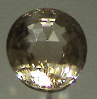
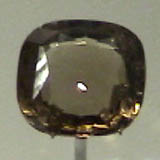
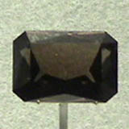
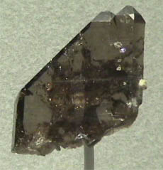
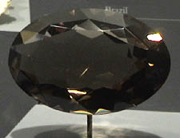

Smoky Quartz
|
Quartz is silicon dioxide, SiO2. Quartz is abundant in the Earth's crust, being the chemically simplest form of the silicates. All the samples here are displayed in the Smithsonian Museum of Natural History. Smoky quartz is one of the noted varieties of quartz, and is often of gem quality. The gem shown at right is 144.9 carats and is from Scotland. |  |
|
 |
 | The gem of smoky quartz at left is 63 carats and is from Stoneham, Maine. The stone second from left is 90 carats and is from Berner Alp, Tschingelhorn, Switzerland |
|
 | This specimen of smoky quartz is about 5x5 cm and is from Berner Alp, Tschingelhorn, Switzerland. |
|
The gem shown at right is about 5x3.5 cm, 1695 carats. It is from Minas Gerais, Brazil. |  |
|
Index |